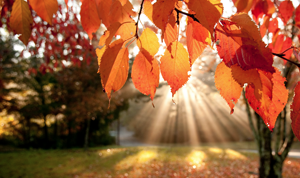
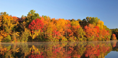
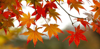
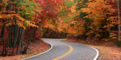
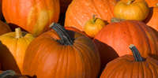
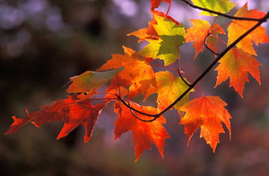
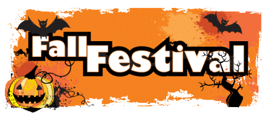

Autumn (also known as fall in North American English) is one of the four temperate seasons. Autumn marks the transition from summer into winter, usually in late September (northern hemisphere) or late March (southern hemisphere) when the arrival of night becomes noticeably earlier.
Etymology
The word autumn comes from the Old French word autompne (automne in modern French), and was later normalized to the original Latin word autumnus. There are rare examples of its use as early as the 14th century, but it became common by the 16th century. Before the 16th century, harvest was the term usually used to refer to the season. However as more people gradually moved from working the land to living in towns (especially those who could read and write, the only people whose use of language we now know), the word harvest lost its reference to the time of year and came to refer only to the actual activity of reaping, and fall, as well as autumn, began to replace it as a reference to the season. The alternative word fall is now mostly a North American English word for the season. It traces its origins to old Germanic languages. The exact derivation is unclear, the Old English feallan and the Old Norse fall all being possible candidates. However, these words all have the meaning "to fall from a height" and are clearly derived either from a common root or from each other. The term came to denote the season in the 16th century, a contraction of Middle English expressions like "fall of the leaf" and "fall of the year". During the 17th century, English immigration to the colonies in North America was at its peak, and the new settlers took their language with them. While the term fall gradually became obsolescent in Britain, it became the more common term in North America, where autumn is nonetheless preferred in scientific and often in literary contexts.
Historic usage
Many ancient civilizations (such as the Amerindians and the ancient Hebrews) computed the years by autumns, while the Anglo-Saxons did so by winters. Tacitus states that the ancient Germans were acquainted with all the other seasons of the year but had no notion of autumn - though this is likely to be wrong, especially as a blanket statement (Tacitus wrote about Germanic tribes without firsthand knowledge and thus promoted myths as well as actual information). Linwood observed of the beginning of the several seasons of the year, that:
In alchemy, autumn is the time or season when the operation of the Philosopher's stone is brought to maturity and perfection. It is also symbolised by the Metal element in Chinese astrology.
Gallery
   In popular culture
Harvest association
Autumn's association with the transition from warm to cold weather, and its related status as the season of the primary harvest, has dominated its themes and popular images. In Western cultures, personifications of autumn are usually pretty, well-fed females adorned with fruits, vegetables and grains and wheat that ripen at this time. Most ancient cultures featured autumnal celebrations of the harvest, often the most important on their calendars. Still extant echoes of these celebrations are found in the mid-autumn Thanksgiving holiday of the United States, and the Jewish Sukkot holiday with its roots as a full moon harvest festival of "tabernacles" (huts wherein the harvest was processed and which later gained religious significance). There are also the many North American Indian festivals tied to harvest of autumn- ally ripe foods gathered in the wild, the Chinese Mid-Autumn or Moon festival, and many others. The predominant mood of these autumnal celebrations is a gladness for the fruits of the earth mixed with a certain melancholy linked to the imminent arrival of harsh weather. This view is presented in John Keats' poem To Autumn where he describes the season as a time of bounteous fecundity, a time of 'mellow fruitfulness'.
Melancholy association
Autumn in poetry has often been associated with melancholy. The possibilities of summer are gone, and the chill of winter is on the horizon. Skies turn grey, and people turn inward, both physically and mentally. Rainer Maria Rilke, a German poet, has expressed such sentiments in one of his most famous poems, Herbsttag (Autumn Day), which reads in part:
Who now has no house, will not build one (anymore).
Who now is alone, will remain so for long,
will wake, and read, and write long letters
and back and forth on the boulevards
will restlessly wander, while the leaves blow.
Tourism
Although color change in leaves occurs wherever deciduous trees are found, coloured autumn foliage is most famously noted in two regions of the world: most of Canada and the United States; and Eastern Asia, including China, Korea, and Japan. It can also be very significant in Argentina, Australia, Chile and New Zealand, but not to the same degree. Eastern Canada and the New England region of the United States are famous for the brilliance of their autumnal foliage, and a seasonal tourist industry has grown up around the few weeks in autumn when the leaves are at their peak.